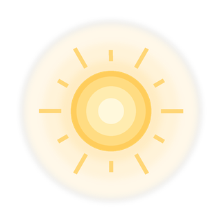
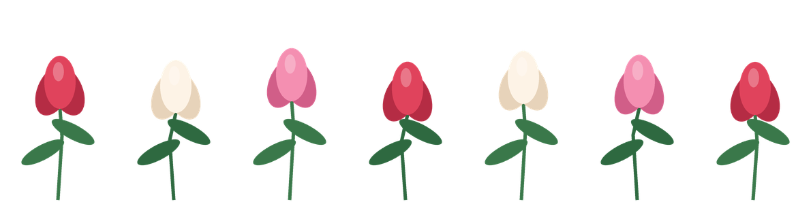
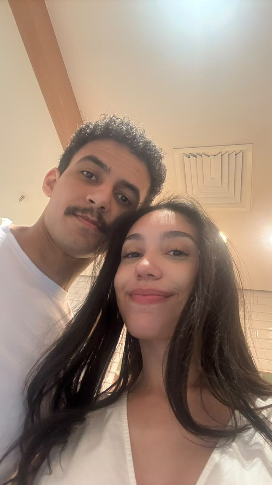
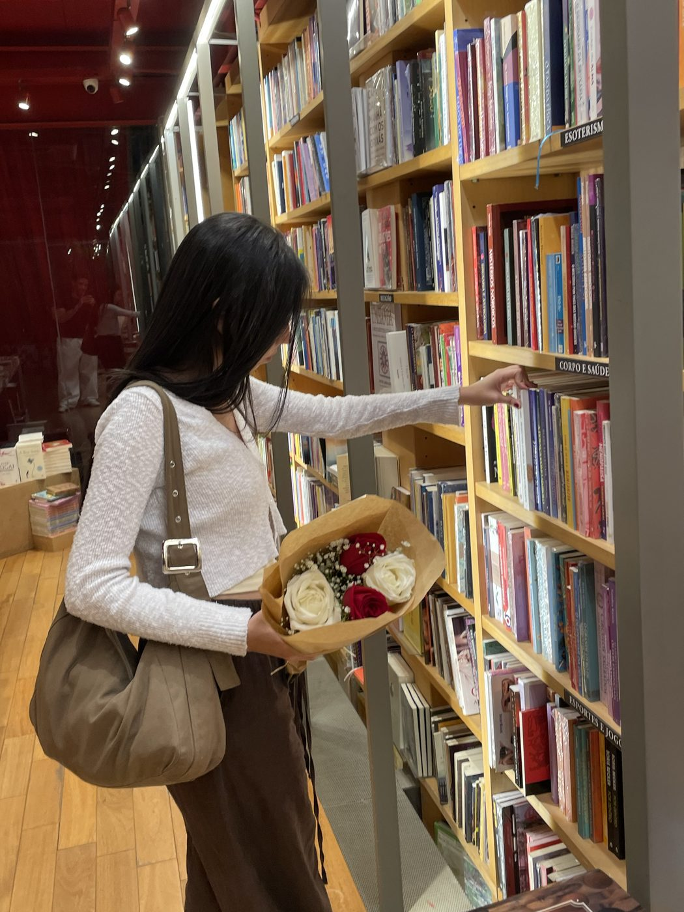

a flor que só floresce no inverno
Moça Bonita,
Sei o quanto você odeia o frio. Mas achei lindo pensar que a flor que você mais ama só floresce no inverno.
E é no meio de tantas contradições como essa que a vida nos traz algo muito especial. Você é igual a essa tulipa, amor: linda, delicada, e foi muito difícil de conquistar. Mas no final valeu a pena cada momento vivido, tanto os ruins quanto os bons, porque foi isso que fez a gente ser quem somos hoje, onde um não funciona sem o outro.
Espero que, sempre que olhar para elas, lembre que eu faria o possível para encontrar qualquer coisa que fizesse você sorrir e te fazer feliz.
Eu te amo mais do que as palavras conseguem dizer.
Com todo o meu amor. ❤️